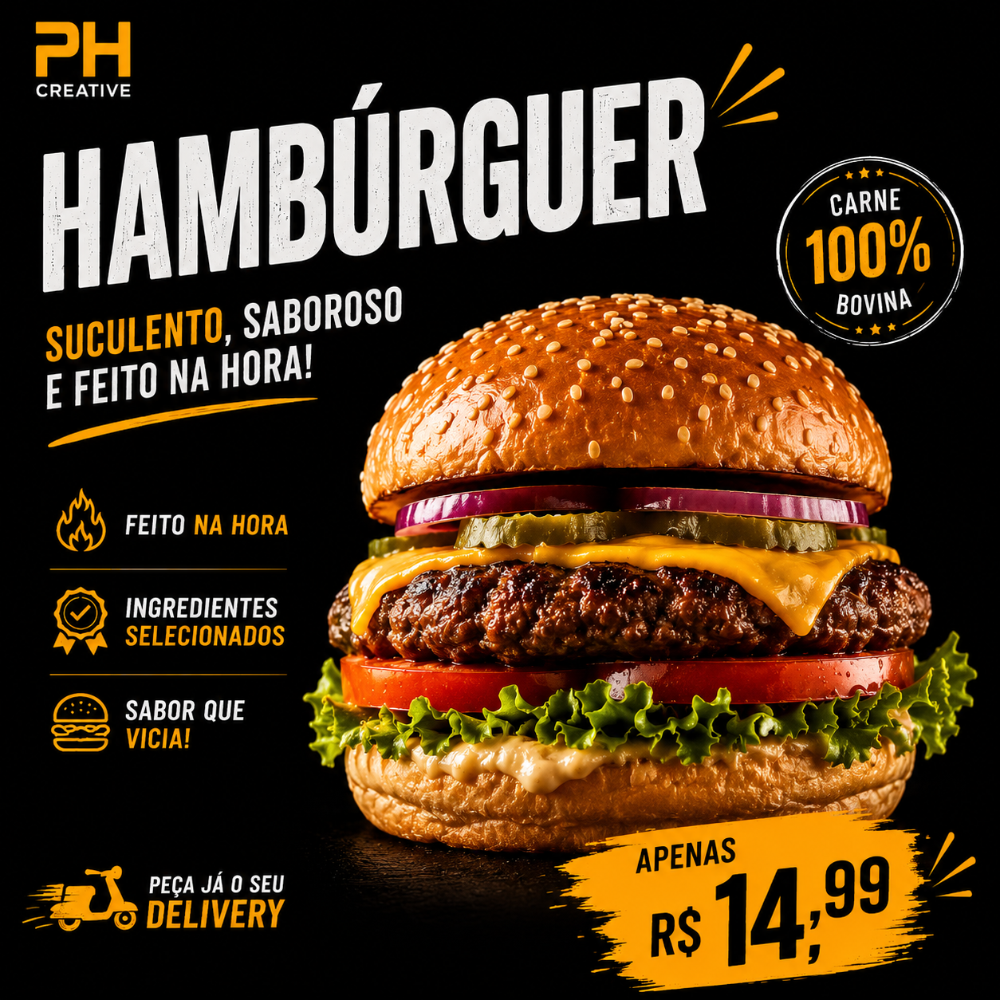
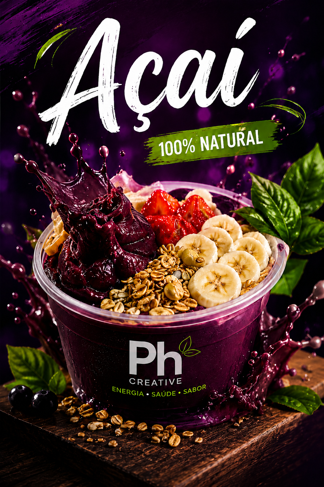
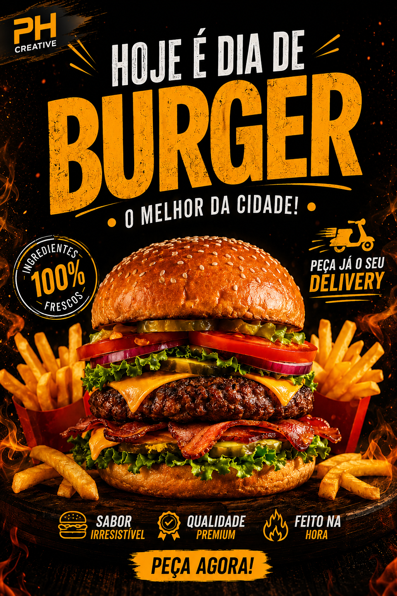
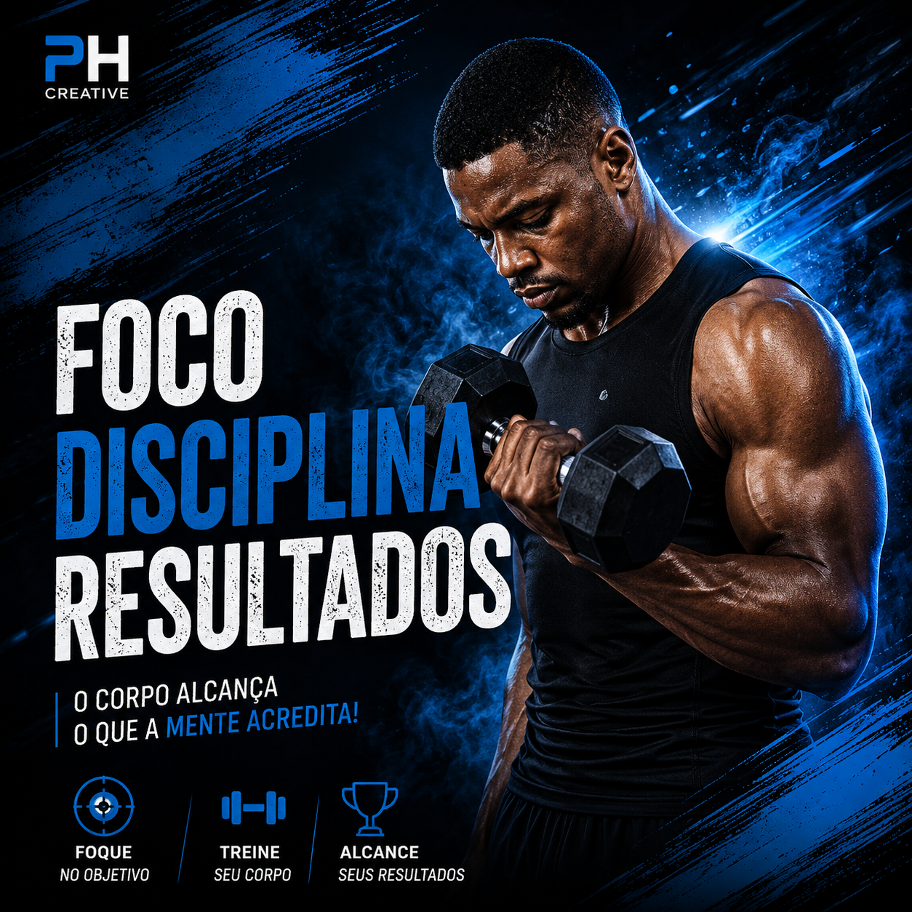
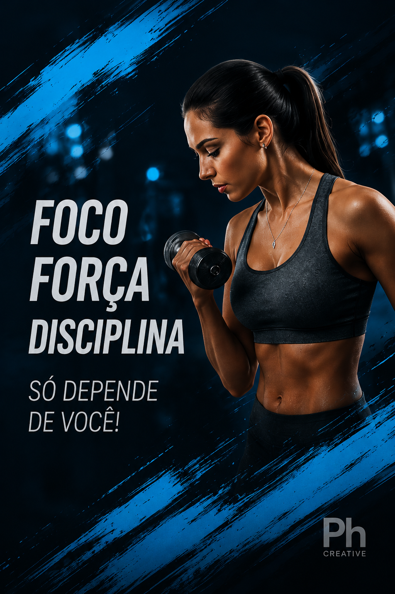
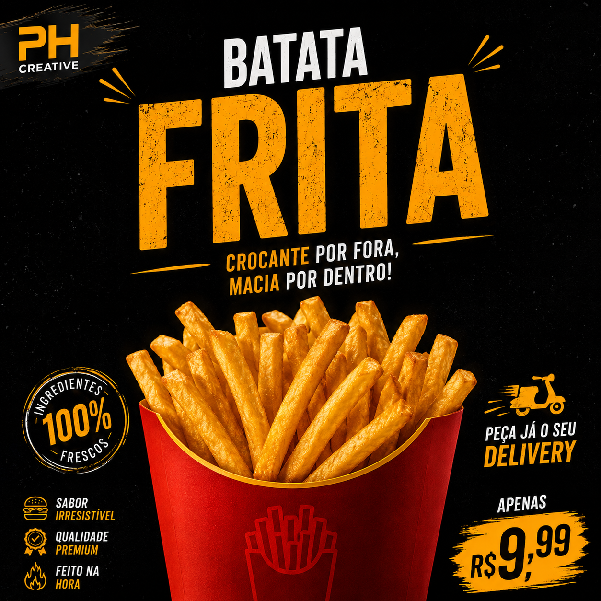

Food Design
Hambúrguer promocional
Peça com alto contraste, destaque de produto e chamada comercial forte.
PH Creative • Portfólio
Prazer, me chamo Paulo Henrique. Esse portfólio não é uma loja. É uma parte da minha história, do meu crescimento e da minha vontade de trabalhar com tecnologia, criação visual, sites, softwares, jogos e soluções digitais.
Portfólio de criação visual, desenvolvimento web e inteligência artificial.
Galeria profissional
As artes publicitárias ficam em destaque com as imagens reais dos projetos, sem card de aviso ou placeholder.
Artes Publicitárias
Seleção de artes criadas para campanhas, produtos, alimentação, bebidas e conteúdo fitness. O foco é impacto visual, composição, direção criativa e comunicação de marca.

Peça com alto contraste, destaque de produto e chamada comercial forte.
.png)
Campanha visual com cores vibrantes, sensação refrescante e atmosfera noturna.

Arte com estética energética, destaque para ingredientes e sensação saudável.

Composição voltada para impacto, apetite visual e comunicação direta.

Peça motivacional com estética esportiva, luz dramática e visual de performance.

Arte com visual moderno, composição limpa e mensagem de superação.

Peça promocional com linguagem forte, contraste e destaque total para o produto.
Outras áreas
Além das artes publicitárias, o portfólio apresenta minhas outras frentes de criação visual e desenvolvimento.
Links dos meus sites, páginas criadas, experiências digitais e projetos feitos com tecnologia.
Retratos profissionais, tratamento de imagem, iluminação, fundo e composição.
Capas, thumbnails, banners e materiais visuais para canais e vídeos.
Capas profissionais, banners de perfil, identidade visual e apresentação pessoal.
Criação de marcas, símbolos, identidade visual e conceitos para projetos.
Minha trajetória
Eu trabalho criando soluções visuais e digitais usando tecnologia, criatividade e inteligência artificial como ferramenta principal.
Hoje eu desenvolvo sites, crio páginas profissionais, edito fotos, faço artes, logos, banners, anúncios e materiais visuais para a internet. Meu foco é transformar uma ideia simples em algo bonito, útil, organizado e com aparência profissional.
Eu não vejo a inteligência artificial como uma trapaça. Eu vejo como uma ferramenta. Assim como um fotógrafo usa uma câmera, um editor usa um programa de edição e um programador usa um computador, eu uso a inteligência artificial para acelerar meu processo, aprender mais rápido e criar coisas que antes pareciam impossíveis para mim.
Meu trabalho não é apenas apertar um botão. Meu trabalho é ter visão, saber o que quero criar, conversar com a ferramenta certa, corrigir os erros, melhorar cada detalhe e ter paciência para chegar em um resultado cada vez melhor.
Prazer, me chamo Paulo Henrique, e esse é o meu portfólio.
Desde criança eu sempre tive uma ligação muito forte com computador. Enquanto muita gente estava jogando bola, eu gostava de ficar no quarto mexendo no PC, explorando programas, vendo vídeos, testando coisas e tentando entender como aquele mundo funcionava.
Meu sonho é ser programador. Quero trabalhar com desenvolvimento de softwares, sites, jogos, sistemas e soluções digitais. Quero resolver problemas com tecnologia. Quero criar coisas úteis. Quero viver disso.
E hoje eu estou colocando esse sonho em prática. Estou estudando, praticando, errando, corrigindo, aprendendo e evoluindo um pouco todos os dias. Ainda tenho muito para aprender, mas agora eu não estou mais só assistindo de longe. Agora eu estou fazendo.
Existe uma diferença muito grande entre ter inteligência e usar a inteligência. Para mim, evolução acontece quando a pessoa decide aprender, praticar e transformar curiosidade em ação.
Quando a inteligência artificial surgiu, eu enxerguei uma oportunidade. Muita gente olhou para a IA como brincadeira. Eu olhei como ferramenta. Comecei a conversar com ela, testar, pedir ajuda, criar coisas, estudar códigos, melhorar textos, gerar ideias e entender como poderia transformar isso em trabalho.
A PH Creative nasceu dessa mistura: sonho, necessidade, criatividade, inteligência artificial, tecnologia e vontade de vencer. Esse portfólio não é uma loja. É uma parte da minha história. É o começo de uma caminhada.